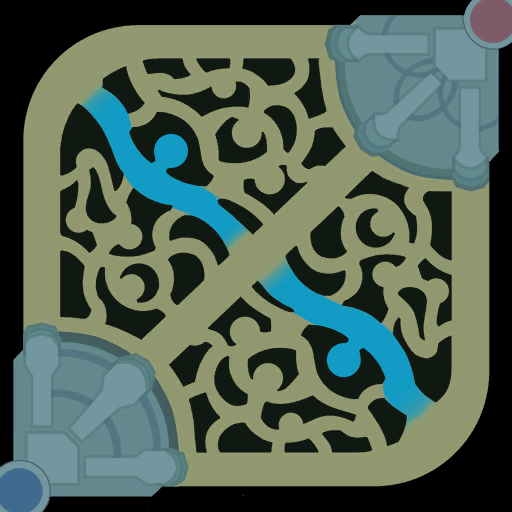
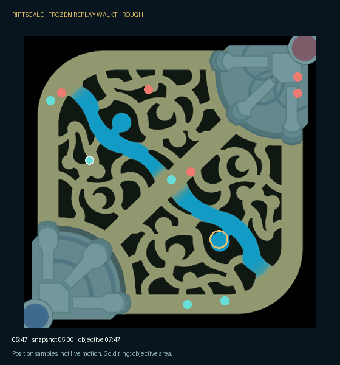
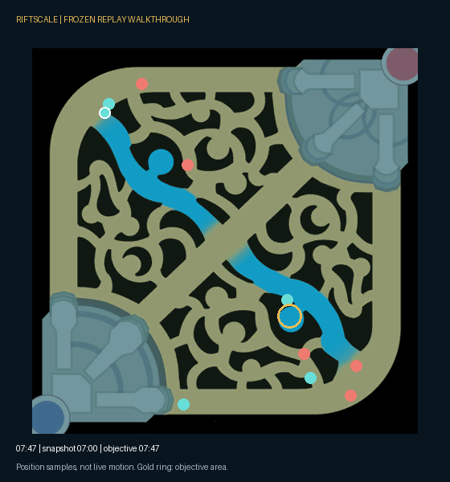

LEAGUE OF LEGENDS · OCE · POST-GAME ANALYSIS
A result tells you who won.
Evidence tells you what to review.
RiftScale compares individual match metrics against high-rank players of the same champion and role, then connects review prompts to the match events behind them.
Replay a real example →Frozen, anonymous data · no login or API keyMultiple players can share one match.
Not a hand-authored story.
Explore the same data below.
CONCLUSION → EVIDENCE → REPLAY
What happened around this objective?
Loading the frozen case…
Reading the evidence
A rule-based hypothesis, not proof of causation. Click an observation to inspect its time window.
Alternative explanations & complete evidence
Position snapshot

Teal: focus team · red: opposing team · gold ring: objective. Markers show the last sampled positions, not exact movement or alive/dead state.
CHECK THE NUMBERS
The same match, against matched benchmarks.
Same champion and role, D4+ reference across patches. These phase-level gaps do not establish the cause of this objective loss.
WATCH THE WALKTHROUGH
Two minutes of context, in a 60-second guide.
This generated animation uses the same frozen coordinates as the interactive demo. It is a data animation, not a recording of the game client.
Load the animated guide

View a static replay still

ENGINEERING CASE STUDY
From match data to a claim you can check.
01 / Problem
Players see wins, losses and KDA, but struggle to identify repeatable behavior to improve. A useful review needs a measurable gap and an inspectable example.
02 / Constraints
Role, champion, match length and teammates affect the numbers. Timeline coordinates are sampled about once a minute; event timestamps can be much finer.
03 / Approach
Compare each player-match to its champion-role reference. Report medians, quartiles and sample counts. Link objective-centered observations to bounded review hypotheses.
04 / Evaluation
Deterministic tests cover duplicate exclusion, missing values, reverse-direction metrics, sparse baselines and incomplete phases. This is not a validated causal model.
Riot Match + TimelinePrivate cache
→Features + benchmarksChampion × role
→Frozen public caseAllowlisted fields
→Evidence + replayInspect observations
Definitions that matter
- Counts are player-match records, not necessarily distinct games or players.
- Comparisons require the same champion and role and at least 20 observations; there is no fallback to another champion.
- Repeated weakness requires at least 5 eligible games, 3 weak-quartile observations and a weak fraction of at least 60%.
- A derived teamfight contains at least 3 champion kills with consecutive gaps no longer than 15 seconds.
- 25+ damage and damage taken are divided by actual minutes after 25; earlier definitions remain unchanged.
Limitations & next validation
Correlation and event order do not prove why an objective was lost. Minute snapshots can miss rotations. Riot does not expose real wave or jungle-camp state. Vision actions do not describe ward quality. Benchmarks span patches.
Next: compare the same frozen episodes against independent human reviews and record disagreements.